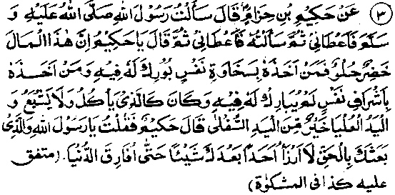
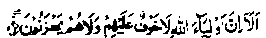

Chapter Six · Section (d): Ahadith on the foregoing subjects (concerning the excellence of Tawakkul)
Hadith 3

Hakim Ibne Hizaam Radhiallaho anho said that he asked Rasulullah Sallallaho alaihe wasallam for something and he gave it to him. Later, he asked again and Rasulullah Sallallaho alaihe wasallam, after giving him something, said, 'Hakim, this wealth looks desirable and sweet, and he who receives it with a generous heart will be blessed in it; but he who receives it with Ishraaf (inward greed) will not be blessed in it. He would be like one (suffering from a disease) who goes on eating without being satisfied. And the upper hand is better than the lower one (The hand of one who gives is better than that of one who receives it)". Hakim Radhiallaho anho stated that he replied, "O Rasulullah, by Him Who made you an apostle of truth, I shall not bother anyone after this till I leave the world’.
Note: ‘I shall not bother anyone, means I shall not ask anyone for anything till I die. Some versions of the Hadith add: After this, Abu Bakr Radhiallaho anho used to call Hakim Radhiallaho anho during the time of his caliphate, in order to bestow upon him his portion of the ‘Fai’ (the tribute from the territory which the Muslims had conquered), but Hakim Radhiallaho anho would not accept it. Umar Radhiallaho anho also called Hakim Radhiallaho anho to give him his share of the booty but he refused to accept it. Umar Radhiallaho anho called people to witness, but Hakim did not accept anything from anyone till he passed away. (Targheeb)
Another Hadith has the following effect Rasulullah Sallallaho alaihe wasallam received some valuables from Bahrain. He first gave something out of it to Abbaas Radhiallaho anho. Then he called Hakim Radhiallaho anho and gave him a handful. Hakim Radhiallaho anho asked Rasulullah Sallallaho alaihe wasallam whether or not it was good for him to receive it On receiving the reply that it was not he returned the gift and swore that he will not accept from anyone any such thing till his death. Then he said, "O Rasulullah, pray for me to Allah Ta'ala that He may bless me in my earnings". Rasulullah Sallallaho alaihe wasallam, then payed to Allah Ta'ala to bless him in what he had earned with his own hands. (Targheeb)
Mu'awiyah Radhiallaho anho reported Rasulullah Sallallaho alaihe wasallam as saying ”‘Do not beg importunately, for I swear by Allah Ta'ala that anyone of you who gets out of me what he asks, against my own will, will not be blessed in what I have given him'. Another Hadith says, '(Anyone of you) Whom I give something of my own sweet accord, will be blessed in it; but the one who gets something out of me against my will (simply because he is greedy or because he has asked for it), will be like (a person) who goes on eating without being satisfied." Ibne-Umar Radhiallaho anho reported Rasulullah Sallallaho alaihe wasallam as saying, "Do not a?k for favours importunately, for whosoever gets something from us, after having begged it importunately, will receive it without blessing". (Targheeb)
There also occurs a prohibition, against begging importunately, in the Holy Qur’an. Says Allah Ta'ala:
They do not beg of men with importunity. (al-Baqarah: 273)
Aishah Radhiallaho anha relates that Rasulullah Sallallaho alaihe wasallam once said, "This wealth is attractive and sweet; so whomsoever we give something of our own sweet accord, while he is in a condition that justifies his receiving it, and does not have any greed for it, he will receive blessings of Allah Ta'ala concerning what he gets out of us. And, if we give something to a person against our own sweet will, while he does not deserve to receive it and is greedy for it, he will not be blessed in what he gets out of us". (Targheeb)
‘Barkat’ or Allah’s blessings are, indeed, a great and invaluable bounty. A small amount of something invested with blessings (Barakat) suffices for a surprisingly large number of needs, as happened on many occasions during the times of Rasulullah Sal-lallaho alaihe wasallam. For example, once a bowl full of milk, simply because of such blessings, sufficed for a large number of the ‘Ashaab-us-Suffah’. We also experience this effect of Barakat in several cases, even in our own times, though not to the same extent as occurred during the times of Rasulullah Sallallaho alaihe wasallam. A thing divested of Allah’s blessings (Barakat) has different effects. The money earned by a person, if it is not blessed, is always insufficient for his needs; the more he earns, the greater are his requirements; he is like a person, mentioned in the Hadith above, who goes on eating without being satisfied.
Here, I relate a personal experience to illustrate how one’s leisure hours, when divested of Allah’s blessings, seem to slip away at an unimaginably Cut speed. In my boyhood days, I was very fond of holding a sort of poetic quiz competition, in which two teams competed with each other in reciting verses from memory. As my father Rahmatullah alaihe, who was otherwise a stern parent, did not object to these contests, our fondness for them increased as we advanced in years. I knew by heart, without any exaggeration, thousands of verses from the poetry of various languages (though many have now escaped my memory). It was my favourite hobby and, whenever my best friends and relatives got together, we began reciting verses, and started a contest During the early days of my youth I happened to visit Kerana and stayed there for the night with one of my cousins who lived there and practised law. He was also very fond of this recreation or rather, one ought say, it was his weakness. Some other relatives of mine, who heard of my visit, also assembled there. After ‘Ishaa (night) prayers, the pastime began. It was winter and my cousin bought three seers of milk because he thought we would need it for making tea several times during the night, as the competition usually lasted throughout the night. We were busy in our pastime and the first course of tea had not yet been served when I felt like going to the toilet and got out of the room. We thought that it was the beginning of the game and that only two or three quarters of an hour had elapsed. Looking eastward, I saw a white radiance on the horizon and wondered what this white glow could mean. I called my companions. They came out and were also astonished to see the light Everybody was making conjectures when, to our utter amazement, we heard the Azaan from all the four corners of the city. Then, of course, we realised that it was dawn. So, that long winter night had passed so swiftly and so imperceptibly! Throughout that day, I remained in a strange mood of amazement and, wen today, whenever I remember it a strange sensation runs through my body. That night had been so frightfully divested of ‘Barakat’ (blessings) that it looked unimaginably short in duration. And now with age, my feelings of amazement at the incident have given way to a deep sense of remorse and self-admonition. I imagine that, like that night of Kerana, my whole life span, when viewed in retrospect after death, would seem to have slipped away so swiftly. The following night, my cousin dreamt that he saw his father (my uncle), Maulana Raziyy-ul-Hassan Rahmatullah alaihe, who had learnt Hadith from Qutb-ul-Aalam, Maulana Gangohi Rahmatullah alaihe, saying to him, It looks strange that a pious man like Zakariyya should spend all night in such idle pursuits.’ Perhaps it was owing to his blessed wishes and concern for my spiritual wellbeing that, since that day, I have never indulged in this pastime. The memory of that night spent in Kerana has filled me with astonishment, ever since. I have, however, drawn two conclusions from this incident, based on clear conceptions:
Firstly, I realised the truth of those incidents about some Divines who would stand in Nafl (supererogatory) prayers throughout the night and others who, after their wudhu for Ishaa prayers, did not need to make a fresh Wudhu (ablution) for Fajr prayers, as they remained busy in their devotions, supplications, etc., to Allah Ta'ala during the entire night. All such incidents are true and stand to reason. As a matter of fact, when one is rapt in a mood of heavenly bliss, the long hours of night slip by unnoticed and sleep has no power over such raptures; as a special favour from Allah Ta'ala, such pious beings derive a peculiar delight from their devotions. Obviously, those who are denied this bliss find it hard to stay awake during the night.
Secondly, my experience of that night testifies to the truth of what has been said in a Hadith regarding the Day of Qiyamah (Resurrection), the span of which is fifty thousand years,but which will be made so short for some believers that it will be equal in duration to the time spent in performing one Salaat or (according to an alternate version) the time that elapses between two Salaats. Certainly, the virtuous men who have no sins reckoned against them shall have no fears and, by virtue of their A‘maal (good deeds), they will enjoy the privileges promised to such people in the Quranic Verse:

Lo! Verily, the friends of Allah are those on whom fear cometh not, nor do they grieve. (Yunus: 62)
They will be seated in the shade of the ‘Arsh (the Throne of Allah Ta'ala), absorbed in enjoying the fruits of their A'maal. So, the length of that Day will appear to them like brief moments of fleeting joy-